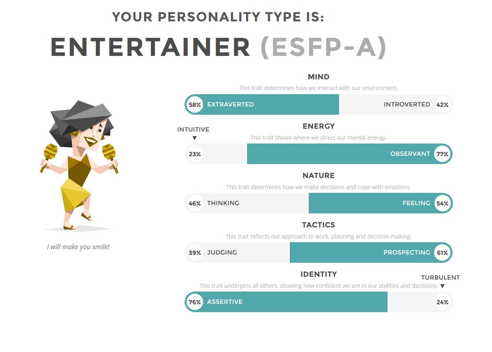
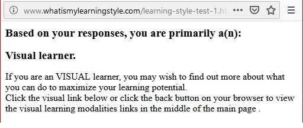
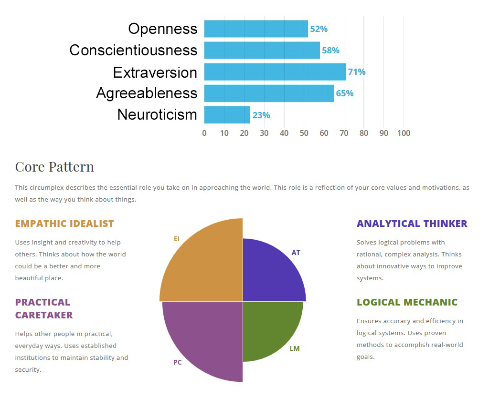

16 Personalities Test
The Entertainer
The results of this test seem to be surprisingly accurate. Having never done one of these personality tests before I was very curious to see what sort of result, I would get. Reading through the description and analysis of “The Entertainer” especially the strengths and weaknesses was a little revealing and eye opening to some of the flaws I’ve always suspected I suffer from. While most of the descriptions of the personality type are on point there are some that I wouldn’t say I agree with. For example being highly emotional, when I comes to emotion I consider myself to be pretty calculated. On the topic of living in the moment and failing to prepare for the future, I’d agree I fall into that.
Working in a team has always been something I’ve enjoyed doing and judging by the result of this personality test it’s looks as though my type is well suited for this. As an “Entertainer” I believe I could help bring a team together, inspire communication and a happy moral. The “Entertainer” is one to help others, bring out their ideas and be willing to listen to any problems. A downside to this personality type would be poor time management.
What I would take from this test when it comes to forming a team, is that finding a team with a good balance of personalities is ideal. Having a team member with strong planning and time organisation to follow along with would be to a great advantage.
Learning Style Test
Visual Learner
I’ve always known I’m a visual learner, while I don’t really have a problem with reading source material and learning from it I really do prefer a visual medium of information. When I learn I like to write notes as a reference point or workout problems on paper. I also often like to learn about new things by watching YouTube videos on them as I love to listen to someone talk while visually seeing what they are talking about.
I’m flexible as a learner, while I do prefer a visual approach, I can learn fairly well using other means. I’m happy with work with my group members to come to a common style during out projects. The main thing for me would be using a medium of communication that allows us to easily share graphics and images as I’ll more than likely still prefer to visual a bit as we go.
When forming a team, I’ll be open to different styles of learning and helping facilitate others styles to ensure we can all benefit from our shared information. While we all may have a different style of learning allowances should be made to make sure everyone does well and leans to the best of their ability.
Big Five Personalities Test
This test seems to indicate a pretty even level across the big five personality types. The results look pretty similar to the previous personality test taken. It looks to show my interest in creativity is pretty split, while I do appreciate being creative I'm still rather pratical in my views. I'm outgoing when I want to be and like to help others around my if I can. This also confirmed the previous test in that my ability to plan is equaly split with my desire to live in the moment.
When working with a group this again indicates I should have no issues in getting to know everyone and and will do my part to help unifiy everyone. My approach to helping others will be benifical in making sure everyone is doing okay and no one is left behind. At the same time I'm still very inclined to to motivate myself and get my part of the work done.
When chosing a group I'll be quite open to working with different people, as shown by this test I'm empathetic to the needs of others but not at the expense of getting my own side of the job done. I'd like to work with others that have a similar approach.